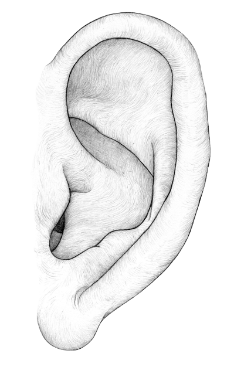

6 Word Stories
Psychoanalysis
- What Id wants:
- Taro Land Dessert with yogurt toppings
- On SuperEgo
- Justice, love, yeah I don’t care
- Defense Mechanism: Displacement
- *kicks everything* when my dog died
Humanist
- Freshman self:
- Wet behind the ears and outgoing
- Future Self at Age 25
- Old, decrepit, alone, without taro dessert
Trait Perspective
- The trait I'm most proud of: Neuroticism
- I'm calm collected, and stress free
- The trait I want to change: Agreeableness
- My irritability in general with others
Social-Cognitive Perspective
- School Personality
- Absolutely unhinged and boy howdy crazy
- Home Personality
- Loud, obnoxious, unhinged, and quite loveable
- External Locus of Control
- A pebble in a great ocean
